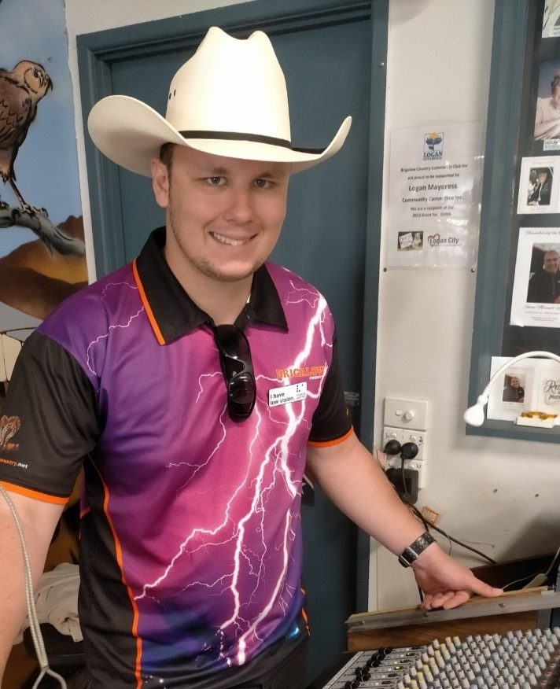

Tim is an exceptional 18 year old whose emotional intelligence and compassion is beyond his years. He graduated from high school last year with good grades, turning 18 in February this year. Like many teenagers his age, he enjoys hanging out with friends as well as going to the gym. His childhood was full of adventure sports including fishing, boating, kayaking, rock climbing, hiking, abseiling and camping, and he continues to do all these sports today, including golf and table tennis, but with only 10% vision.
It is hard for Tim to describe what he cannot see. He has no peripheral vision, with less than 10 degrees field of vision for both eyes. The left eye is worse because of severe cataracts due to his retinitis pigmentosa and planned for cataract surgery.
{kind=link}
Start of vision deterioration
Although Tim started wearing glasses at about 10 or 11 years old, it was only to read and write. He didn’t need them for his adventure sports.
Tim explains the first time he noticed his vision loss, which happened during the June/July holidays in 2018, “I was out in the truck with dad who is a local delivery driver and he handed me a sling, but I didn’t see it as it was in a blind spot that had suddenly appeared.”
“Then I had my first visual fields test at 15 and a half years old and it showed I had a few sections of my vision missing. Then I had my first referral to come to Queensland Eye Institute and met Dr Abhishek Sharma, where a number of tests were performed.”
As a result of the tests, we now know that Tim’s main eye conditions are:
- Retinitis Pigmentosa
- Bilateral cataracts
Managing vision loss
Despite his vision loss, Tim is as independent as he can be. As he explains, “I try and stick to as many familiar environments as I can. I use my mobility cane to get around to help with navigating. I often have a person travelling with me to assist with finding my way around. I use magnifiers, screen readers and a couple of other different techniques. I am starting to use echo location to help with navigation. There are two forms, active and passive echo location.”
{kind=link}
Clinical Trials
Currently Tim is taking part in an Inherited Retinal Disease clinical trial at Queensland Eye Institute. As he says, “This trial is quite important. It is the most promising thing in the world that we have, to reduce the deterioration of my eye sight and the hope that it will allow me to see for as long as possible as well as slow down the deterioration, if not stop it.”
Tim maintains an active lifestyle. He goes to the gym and has recently partnered with his cane trainer to play blind golf, table tennis and bowls. In addition to this, he does free diving, spearfishing, hiking, biking, fishing, camping, archery and rock climbing. He is an inspiration to many and documents his sporting activities on his YouTube Channel called ‘Visually Impaired.’
{kind=link}
Staying positive at 18 with vision loss
Meeting Tim, you are immediately struck by how positive he remains. Despite such deteriorating eye conditions Tim says, “I try and see the bright side as I still have some sight left. I can still see there are heaps of opportunities for me to go out and explore and there are heaps of people trying to help, like QEI and other organisations that I am getting assistance through, just with training and navigation and monitoring my condition. There are always opportunities out there to go and try, so I will give everything a try once.”
“I might be having a bad day but there might be someone having a worse day.”
Tim will continue to focus on his YouTube Channel and is keen to find work. He knows how important employment is for him to stay “mentally engaged and active.”
{kind=link}
Queensland Eye Institute Foundation
Medical research and trials have the potential to save sight and improve the lives of thousands of people who have vision impairment. The QEI Foundation relies solely on the generosity of donors to continue its work.
Thank you to Tim for sharing his story.
{kind=link}
Please support our sight-saving work
Your donation helps us recruit the best researchers, purchase the latest equipment, advance clinical trials and train tomorrow's eye specialists.